Nitstone Finserv Qualified Lead Generation and Disbursal Growth Roadmap
You already have what most challengers don't.
The goal: a predictable, compliant and measurable pipeline of qualified borrowers that turns into branch visits, disbursals and customers who come back.
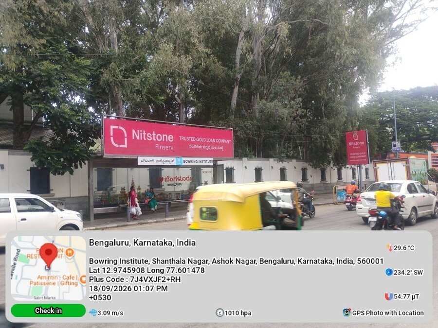
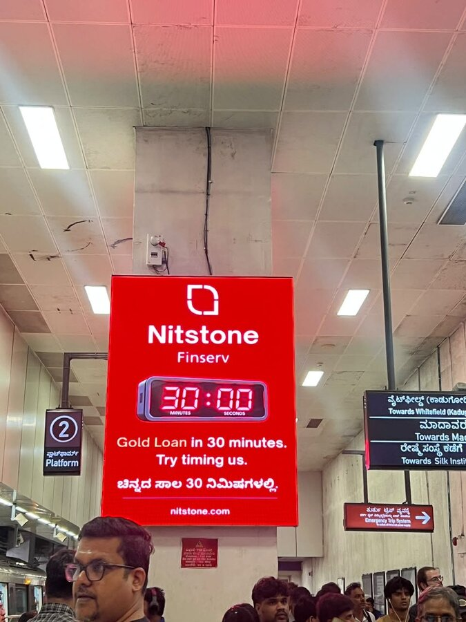
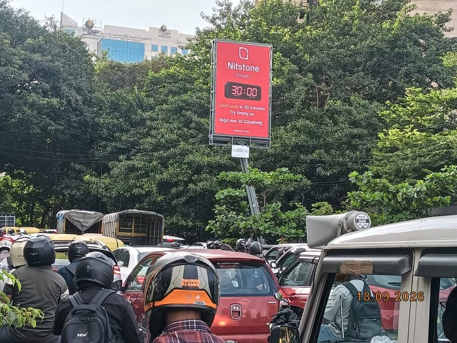
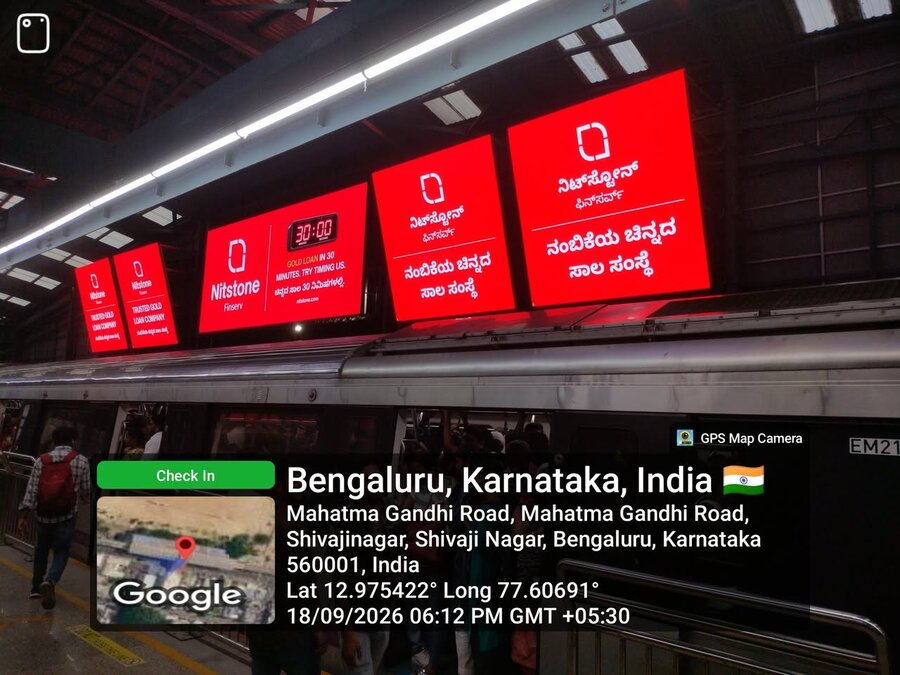
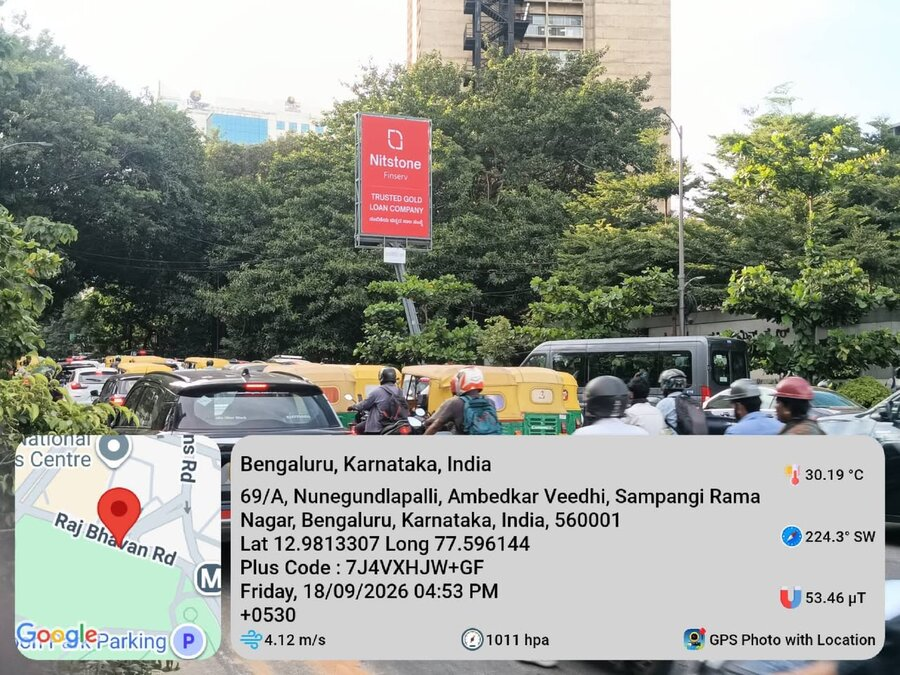
It isn't too little advertising. It's a broken chain.
Follow one borrower from the hoarding to the branch. Every step leaks.
LED screens create awareness.
Branches don't show up reliably in local Map results.
No call or WhatsApp button that's easy to find.
Greetings, little proof of valuation, safety, rates or the 30 minutes.
It comes from a Page with almost no history.
Salesforce can't link the ad, branch, lead quality and disbursal.
Become Bengaluru's most local, most measurable gold-loan challenger, one branch catchment at a time.
Win the ground around each branch before any broad, multi-product push.
Prove the engine
Fix compliance and tracking, win the nearest catchments, rebuild trust, find which channel, audience and message combinations disburse.
Scale the engine
Grow winning catchments, add transfer, repeat and referral loops, and optimise media for disbursed value, not leads.
Build authority
Turn six months of evidence into category authority, better lead scoring and repeat economics. Test adjacent products carefully.
Build the expansion platform
Budget by marginal disbursal value, document the new-branch system, and decide: deeper Bengaluru, more branches or a new city.
Three kinds of number in this plan, always labelled.
Published or observed
From Nitstone, a competitor, a regulator, an annual report, or seen on the live site.
Third-party data
Traffic and search estimates. Useful for direction, not audited.
A stated hypothesis
For budget and funnel planning. Replaced with Nitstone's own data during Phase 1.
Half the opportunity is people already looking for a gold loan nearby.
Planning model: recommended split of new-customer opportunity for the first six months. Not a measured mix.
Search and Maps. Rates, transfer, documents, "near me", directions, calls.
Meta. Local awareness, proof and vernacular video before someone searches.
Repeat, referral, organic and partners. Familiarity lowers the trust hurdle.
Paid search stays the foundation. It stops being the dependency.
Planning model: share of new-customer opportunity by channel family, per 90-day phase.
- Search keeps the highest intent, but its share falls from 35% to 23%.
- Maps grows with branch reviews and local relevance.
- Meta moves to proven creative, retargeting and measured reach.
- Repeat and referral becomes the compounding, higher-converting engine.
Plan the creative around why someone needs money, not their age.
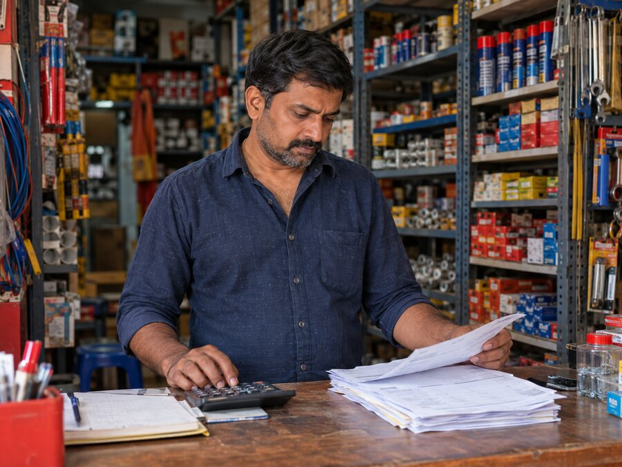
Small-business cash flow
"stock, salaries, supplier payment, seasonal capital"
Best first channels: Search, Maps, Meta vernacular video, partners
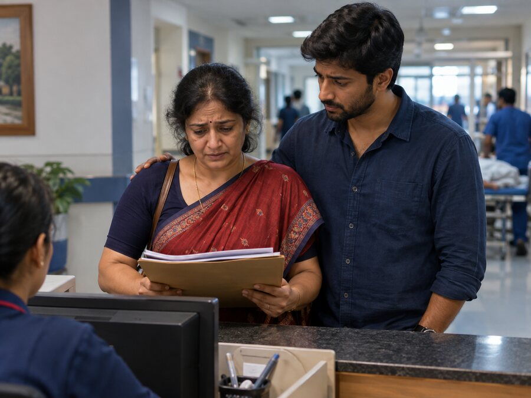
Household or medical emergency
"money today, medical bill, urgent expense"
Best first channels: Search, Maps, call and WhatsApp
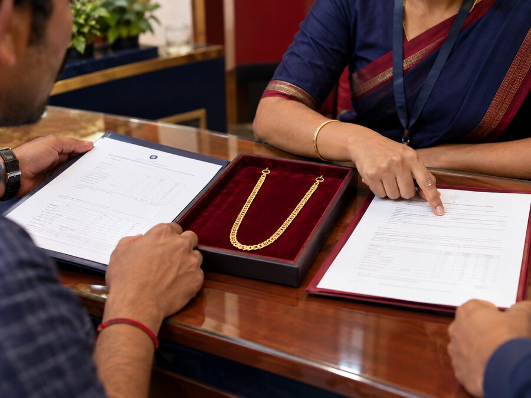
Transfer from another lender
"reduce cost, better value per gram, transfer process"
Best first channels: Search, Meta, CRM and referral
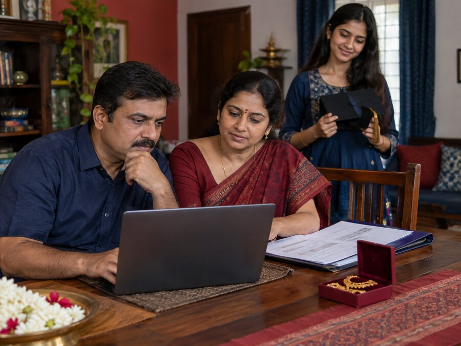
Education, wedding, planned spend
"education fees, wedding, renovation"
Best first channels: Search, YouTube, Meta
Repeat or top-up
"top-up, renewal, additional draw, repayment flexibility"
Best first channels: CRM, WhatsApp, service messages
Not one Bengaluru campaign. A market cell for every branch.
- Cunningham Road · central Bengaluru
- Lingarajapuram · St Thomas Town, northeast-central
- Bagalur · Kattigenahalli, Yelahanka corridor
- Rajarajeshwari Nagar · west-southwest
- Fifth branch · location to confirm

National lenders own search. You only need to own your catchments.
External estimate: monthly gold-loan organic search traffic, third-party 2026 study. Shares among the four: 54.7%, 31.3%, 12.8%, 1.2%. Attention, not customers or leads. Source
Look at their sites: each one makes the next step obvious.
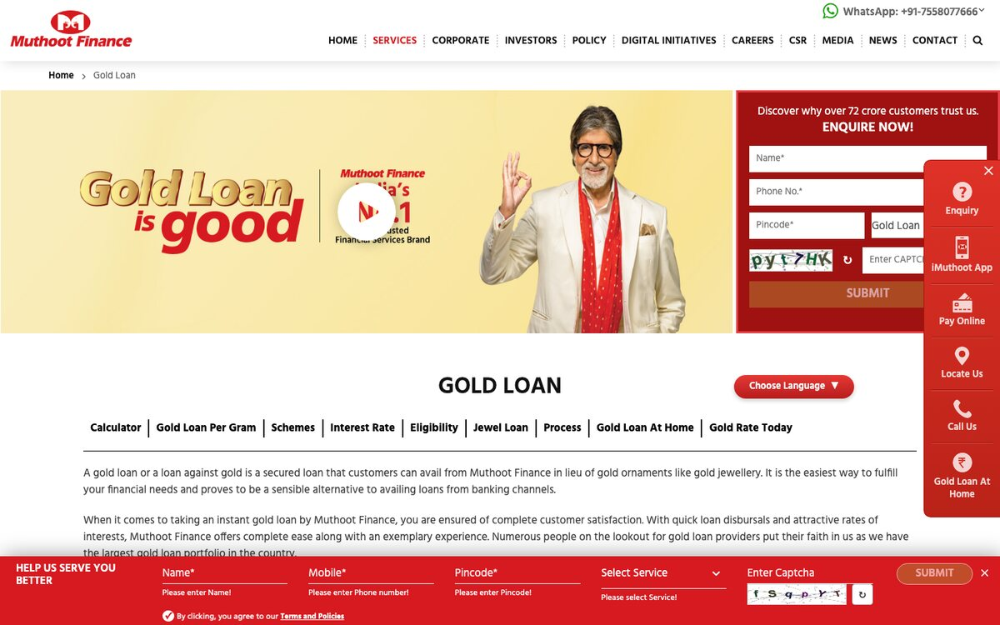
Muthoot Finance
Calculator, lead form, branch locator, phone support, app, Gold Loan@Home, referral
Manappuram
Instant proposition, calculator, apply flow, nearest branch, 24×7 support, online gold loan servicing
IIFL
Bengaluru page, full rate and fee disclosure, calculator, short form, branch appointment, local branch pages
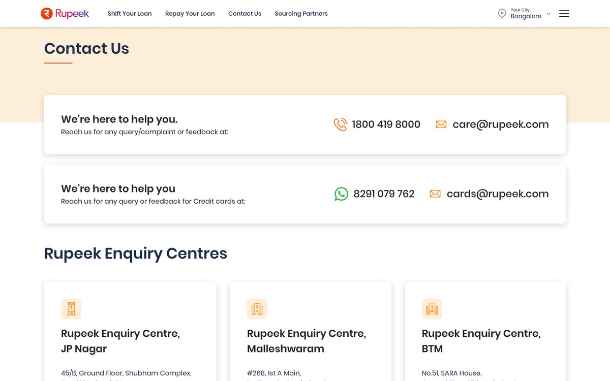
Rupeek
City coverage and a doorstep model
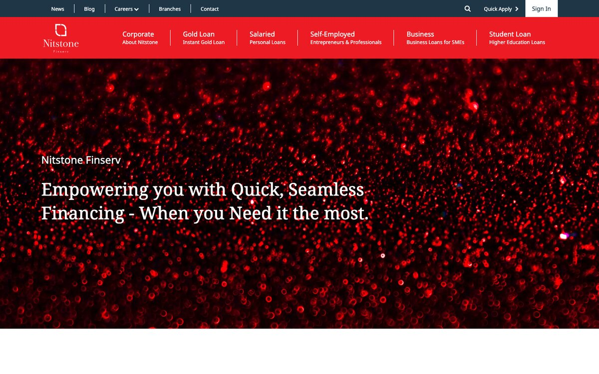
Nitstone
Broad product menu, weak mobile contact path, little local proof, split ad identity
Live gold-loan pages, captured 29 September 2026. Click a screenshot to open the page.
The big lenders make their money after the first loan.
Sources: Muthoot Finance annual report FY2024–25 · Manappuram Finance annual report FY2024–25 · IIFL investor material.
Same click, very different odds of a disbursal.
| Click to lead | Lead to qualified | Qualified to visit | Visit to disbursal | Click to disbursal 0 to 15% | |
|---|---|---|---|---|---|
| Google Search, high-intent local | 8–15% | 50–65% | 35–50% | 60–80% | 0.8–3.9% |
| Google Maps call / directions* | 12–25% | 55–70% | 45–60% | 60–80% | 1.8–8.4% |
| Meta prospecting | 3–7% | 30–50% | 20–35% | 50–70% | 0.1–0.9% |
| Meta retargeting | 6–12% | 45–60% | 30–45% | 55–75% | 0.4–2.4% |
| Organic content, YouTube, SEO | 4–10% | 45–60% | 30–45% | 55–75% | 0.3–2% |
| Referral / repeat | 15–30% | 65–80% | 50–70% | 70–85% | 3.4–14.3% |
Planning model for scenario planning, replaced with Nitstone's measured numbers. *A Maps "visitor" is a high-intent profile interaction, not comparable with a web visitor.
250 leads a day can mean 39 disbursals, or 12.
What good looks like by day 90.
The first 30 days measure the real baseline for each stage. These are working thresholds, not promises.
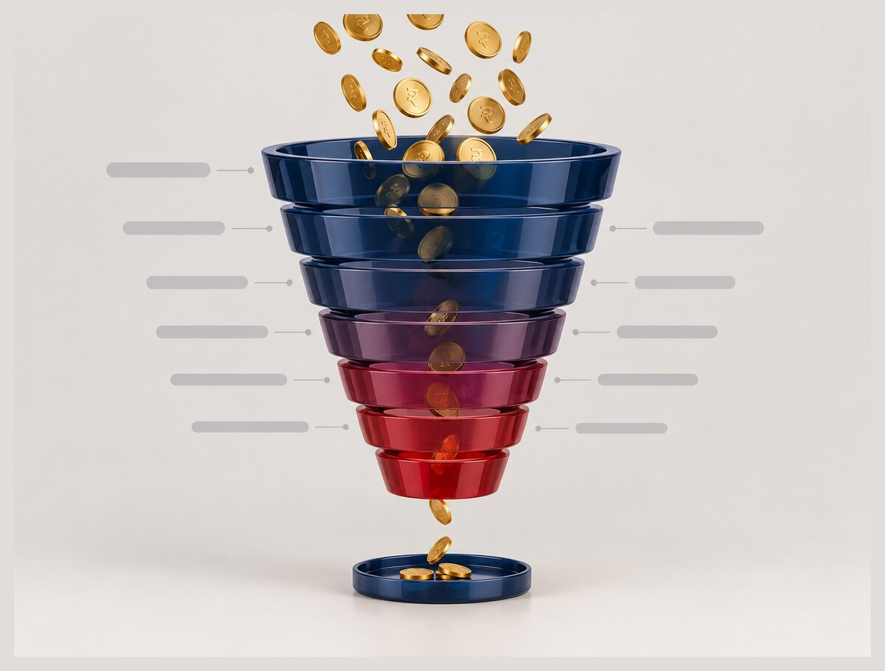
Seven steps from needing money to coming back.
Need
"I need money quickly, but I do not want to sell my gold."
It needsLocal-language stories: when a gold loan helps, what it costs, why trust Nitstone
Search
"How much can I get? What is the rate? Is my gold safe? Which lender is near me?"
It needsBranch pages, an estimator, clear costs, safety proof, full Maps profiles
Compare
"Can I trust this company with my gold?"
It needsOne regulated identity, genuine reviews, staff on camera, real complaint replies
Contact
"Can someone answer now and tell me exactly what to bring?"
It needsSticky call and WhatsApp, pincode routing, reply inside five minutes
Commit
"Is the trip worth making?"
It needsNamed officer, map and hours, confirmation, document list, reminder
Disburse
"Is the valuation fair and the agreement transparent?"
It needsClear valuation, KFS and APR, custody explained, the 30 minutes timed
Return
"Can I repay, top up, renew or retrieve my gold easily?"
It needsReminders, service WhatsApp, top-up and renewal, review and referral asks
Good assets at every stage. A leak at every stage too.
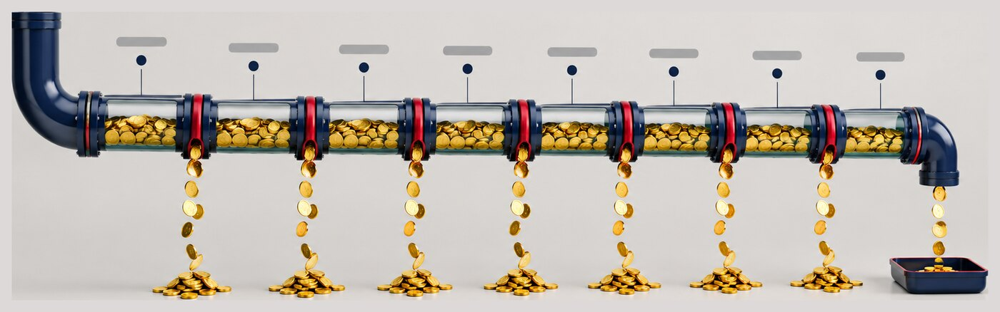
| What you have | Where it leaks | What it costs | |
|---|---|---|---|
| Awareness | LED campaign, social presence | Creative often generic and duplicated | Awareness never becomes preference |
| Search | Website, five branches | Weak local-pack visibility, little YouTube search content | Competitors intercept intent |
| Trust | RBI registration, operating history | Proof not prominent, sparse branch reviews, weak ad Page | People hesitate or check a competitor |
| Contact | Forms and branch numbers | No clear mobile call or WhatsApp path, inconsistent numbers | Urgent prospects give up |
| Qualification | In-house team, Salesforce | Incomplete source and lifecycle data | Media optimises for cheap leads, not good borrowers |
| Visit | Physical branches | No measured appointment or visit funnel | Sales leakage is invisible |
| Disbursal | The 30-minute promise | Not tracked by source or branch | Can't prove the edge or the ROI |
| Repeat / referral | Existing customers | Little visible lifecycle engine | Every customer is bought from scratch |
Every milestone gives management something new to see.
Measurable and reachable
You see: where leads come from, who owns them, how fast they're answered
Credible and locally relevant
You see: qualified-lead rate by channel, creative, need, language, branch
A proven acquisition engine
You see: cost per qualified lead, visit, disbursal and rupee disbursed
Starts compounding
You see: lift from retargeting, transfers and organic demand
Branches become growth cells
You see: branch profitability and demand headroom
A repeatable Bengaluru playbook
You see: a six-month cohort view of cost, repeat, ticket, contribution
Category authority
You see: cohort quality, organic-assisted revenue, repeat and transfer share
A defensible city-growth platform
You see: full-year economics, incrementality, branch maturity, next-year case
By day 30, every branch is one tap away.
- One verified identity per branch: name, address, phone, WhatsApp, hours, owner.
- A complete Google profile with call and WhatsApp routing and someone accountable for replies.
- An immediate gold-loan path on the website.
- Salesforce records source, branch, need state and status.
- An approved library of claims and disclosures.
- Google suspension remediation documented.
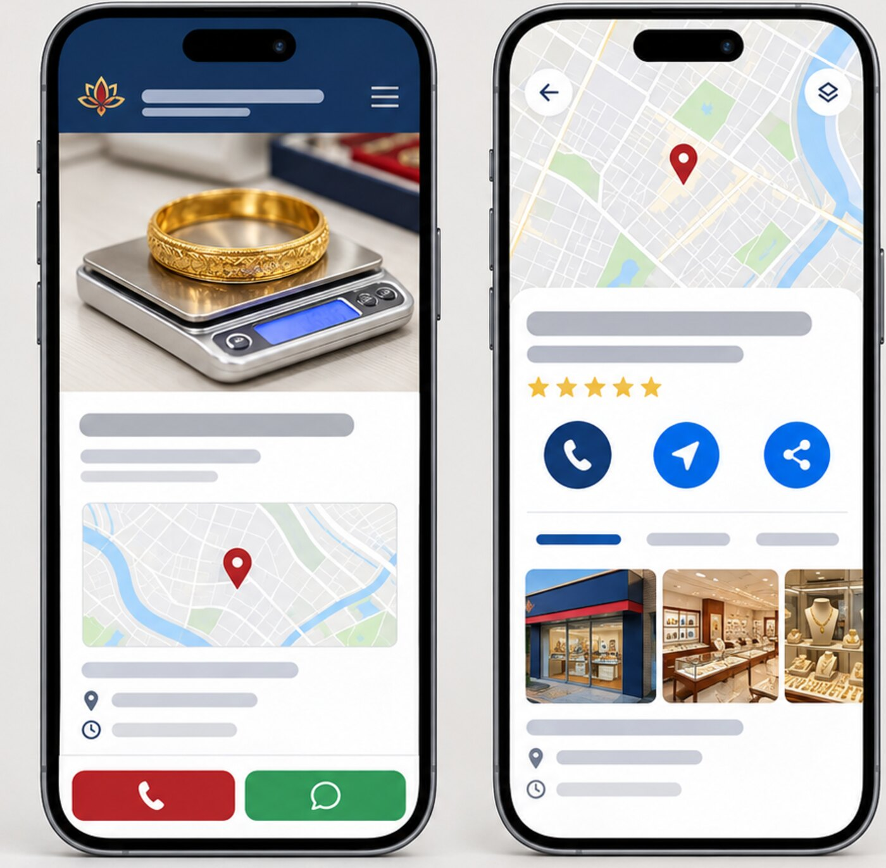
Illustrative: branch page with sticky call and WhatsApp, next to a complete Google Business Profile.
Organic isn't decoration. It has two commercial jobs.
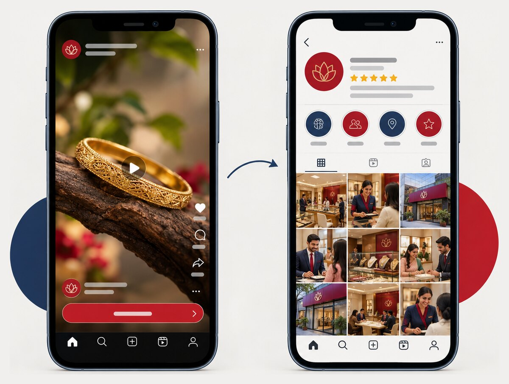
Make paid ads convert
Someone sees an ad and checks your profile, reviews, branch listing, website or YouTube. What they find has to make you feel safe. That lifts paid conversion and cuts wasted spend.
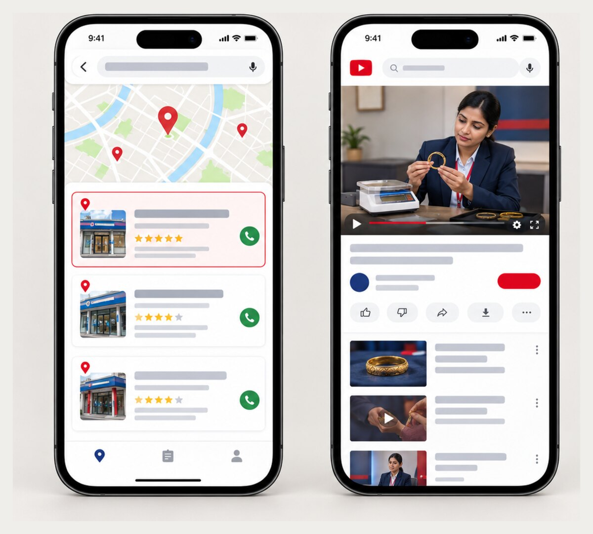
Bring in borrowers on its own
Maps, local SEO, searchable videos, referrals, repeat-customer messages and useful social posts should generate calls, WhatsApp chats, branch visits and disbursals by themselves.
Five connected engines, not one content calendar.
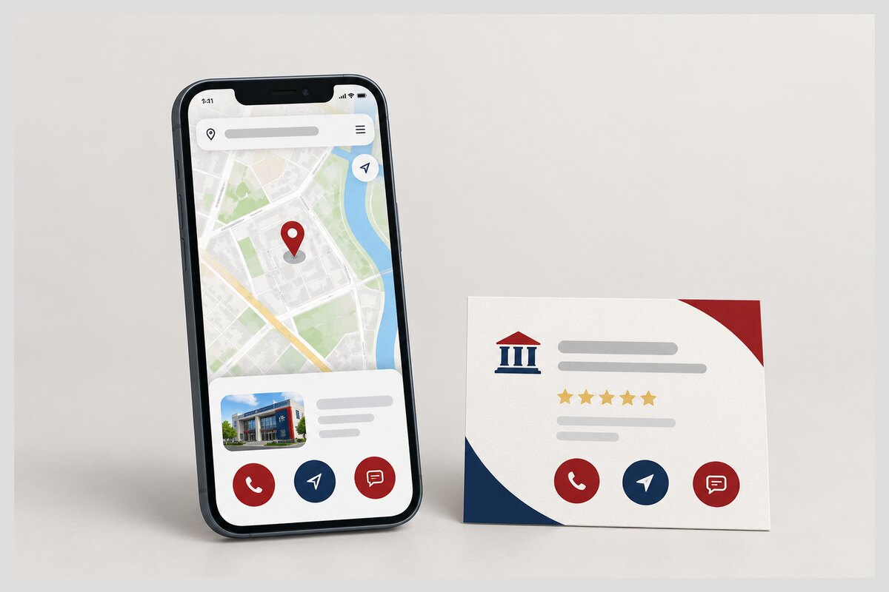
Local discovery
"Find a trustworthy lender near me"
Business profiles, branch pages, local reviews, neighbourhood SEO
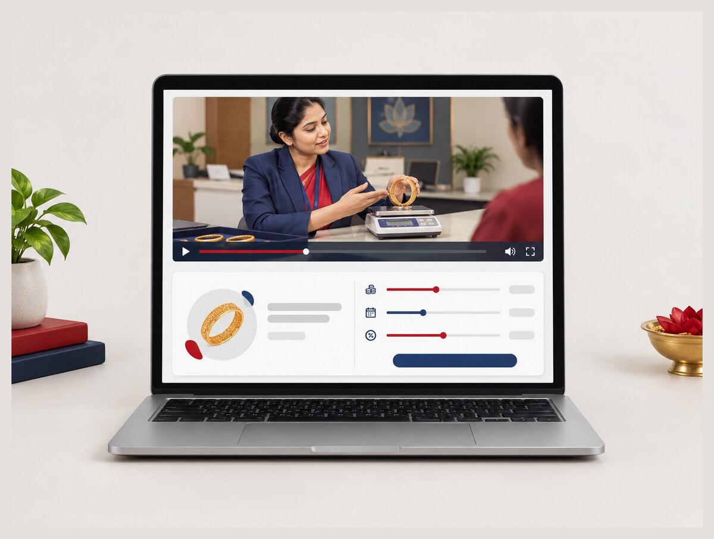
Borrower education
"Help me understand valuation, cost and process"
YouTube explainers, search articles, FAQs, calculators
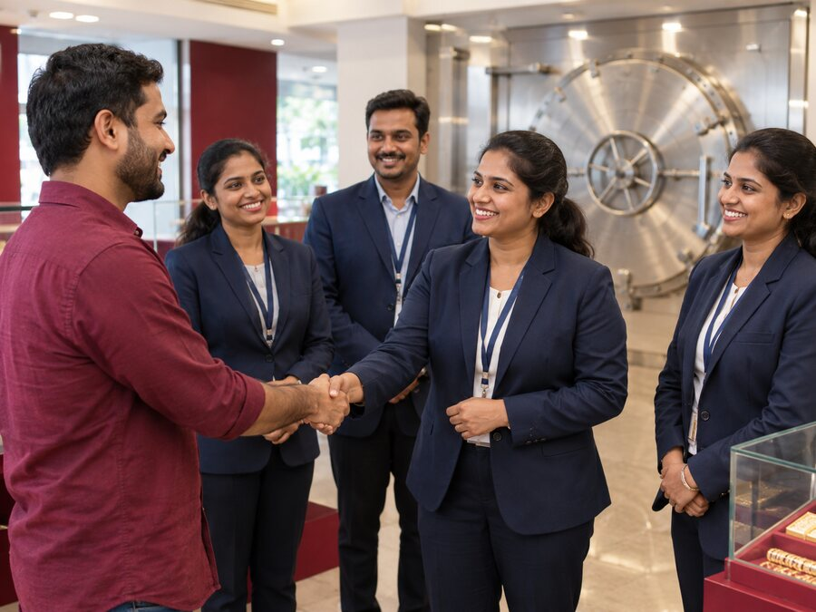
Social proof
"Show me this is real and safe"
Real staff and branches, process videos, customer stories, complaint replies
Conversation
"Answer my situation now"
Comment-to-DM, Q&A, live sessions, WhatsApp hand-off
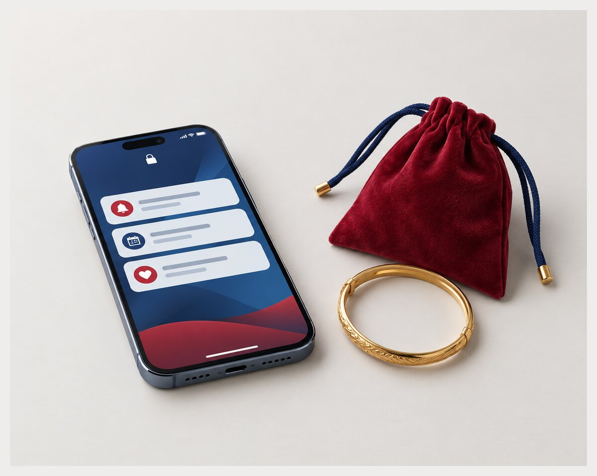
Lifecycle and advocacy
"Help me manage, return or recommend"
Servicing education, review asks, transfer, top-up and referral journeys
Every post belongs to one of four propositions. Festival posts are optional.
Know your gold
Build search demand and give practical value.
- Why two similar ornaments get different values
- What "amount per gram" means
- What happens when gold prices move
Know the real cost
Win comparison and transfer intent.
- Interest rate versus APR
- Gold loan versus personal loan
- When a transfer does or doesn't save money
Know the process and safety
Remove the biggest trust objections.
- A timed walkthrough of the branch process
- Where pledged gold is stored and protected
- How closure and gold return work
Know your local branch
Turn an NBFC into a nearby human service.
- Meet the branch manager or appraiser
- Weekly branch Q&A in Kannada and English
- Local small-business use cases
Organic content with a conversion path, measured like performance.
- A Kannada Reel asks: "Why can two 20-gram ornaments get different gold-loan values?"
- The profile's pinned posts show the 30-minute process, branches and gold safety.
- The Reel offers something useful: "Comment VALUE for the valuation checklist" or "WhatsApp your pincode".
- The reply sends the checklist, asks permission, captures pincode and language, offers the nearest branch.
- Salesforce logs the source, content, need state and branch.
- The branch officer confirms documents, time and place.
- Visit, application and disbursal are credited back to the content theme.
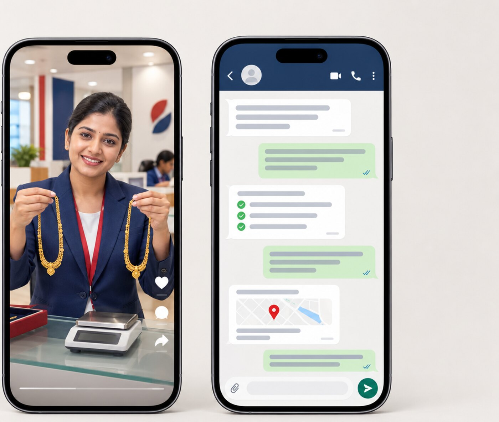
Example of the read-out this makes possible, for one valuation Reel.
The same post copied everywhere does none of these jobs.
| Role | Format | Cadence after ramp-up | |
|---|---|---|---|
| Google Business Profiles | Highest-priority local lead surface | Branch updates, compliant offers, FAQs, photos, reviews and replies | 1 post per branch a week; reviews always |
| Reach and trust with nearby mobile users | Reels with people, carousels, Q&A, location tags, Stories, Highlights | 3–4 posts a week plus Stories | |
| Older local audience, recommendations, WhatsApp | Useful video, branch proof, local-language posts | 2–3 posts a week | |
| YouTube | Searchable education, long-term authority | 6–10 minute explainers, Shorts cut from them, branch films | 2 explainers + 8 Shorts a month |
| Website / SEO | Capture transactional and local searches | Branch pages, transfer page, calculators, FAQs, comparisons | 4 priority pages a month to start |
| Corporate trust, leadership, hiring | Leadership views, governance, branch growth, staff expertise | 2–4 posts a month | |
| WhatsApp / CRM | Conversion and lifecycle, not broadcasts | Checklists, confirmations, reminders, service and referral flows | Triggered by the customer, with consent |
| Reddit / Quora | Long-horizon category credibility | Useful, sourced answers from named experts; rarely a link | Selective, quality first |
One production cycle a month. One topic, many touchpoints.
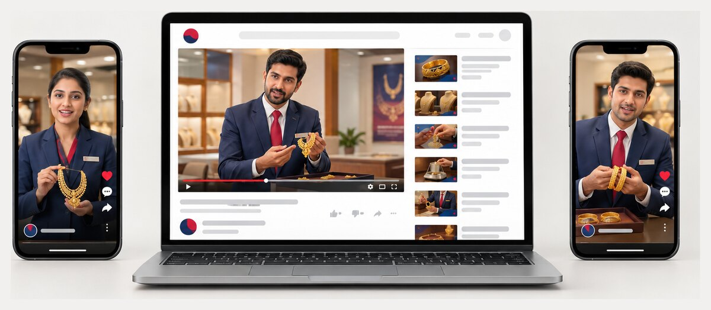
Illustrative: one branch officer, one topic. A long YouTube explainer, with Reels and Shorts cut from it.
Organic gets targets, like any other channel.
| Day 30 | Day 90 | Day 180 | |
|---|---|---|---|
| Branch profiles complete and active | 100% | 100% | 100% |
| Genuine reviews answered within 48 h | ≥90% | ≥95% | ≥95% |
| Useful, search-led share of content | ≥75% | ≥85% | ≥90% |
| Organic leads with source and content attribution | ≥80% | ≥95% | ≥95% |
| Organic share of new qualified leads | Baseline | 10–15% | 18–25% |
| Maps + organic + referral share of disbursals | Baseline | 20–30% | 35–45% |
| Evergreen videos and pages producing leads | Tracking live | 8+ | 25+ |
Milestone targets, not promises, until attribution is reliable.
Paid search terms and call objections feed next month's organic topics.
The first gain often shows up as better conversion on paid traffic. Measure it through branded-search growth, returning visitors, profile views before enquiry, assisted journeys and post-visit surveys.
What organic has to deliver in each phase.
Build trust, prove conversion
- Reposition every profile: gold loan + Bengaluru
- Branch listings complete and ready to convert
- Test comment-to-DM, WhatsApp checklist, Maps/call
- Find the top five themes by visits, not views
Create compounding demand
- Winning themes become search clusters and local pages
- Recurring series with known branch experts
- Transfer, repeat, review and referral loops
- Organic winners become paid campaigns
Category authority
- Six months of real questions become content clusters
- The recurring "Nitstone Gold Guide"
- Rank for valuation, transfer, safety, repayment
- Local PR and expert commentary
A defensible asset
- Best tools and series become Nitstone resources
- Refresh or retire content by disbursals
- Package it into the new-branch launch playbook
- Lower blended cost, less auction exposure
Six things we won't do.
Four quarters. Each one unlocks the next.
Make demand measurable and prove conversion
Where do qualified borrowers come from, and which journeys disburse?
Scale winners and build compounding demand
How far can each branch grow without losing efficiency?
Build authority and customer value
Can Nitstone lean less on paid and earn more per customer?
Create a defensible expansion platform
Is the model ready for Bengaluru leadership and the next branch or city?
Stop losing demand you already have, and trace spend all the way to disbursal.
- Audit the Google suspension and remediate properly
- GA4 + tag management: calls, WhatsApp, forms, UTMs
- Salesforce stages from unique lead to disbursal value
- One name, number, WhatsApp and owner per branch
- Mobile call/WhatsApp, full Google profiles, genuine review asks
- ≥90% of leads have source and branch
- Contactability and response baselines
- Stage definitions approved
- Gold-loan and branch landing pages
- Instagram, Facebook, YouTube repositioned
- 12–16 short videos + 2 explainers a month
- Branch-level Google campaigns when reinstated
- Small Meta cells by branch, language, need
- ≥95% usable attribution
- First branch CPL, CPQL and visit rate
- Six content themes tested
- Offline conversions sent back to ad platforms
- Scale or stop each branch × keyword × message cell
- Sales scripts improved from call audits
- Real 30-minute performance by branch
- First cohort and unit-economics report
- Full funnel for every campaign
- Two proven cells per viable branch
- Approved max CPL, CPQL, cost per disbursal
Grow what works, without paid spend growing at the same rate.
- Budgets rise only where cost per disbursal holds
- Expand winning keyword, area and language clusters
- Meta sequence: problem, proof, comparison, contact
- Transfer journeys on Search, Meta and organic
- Branch demand forecasts and capacity limits
- Marginal cost curve by campaign and branch
- Transfer lead quality and visit rate
- Meta fatigue thresholds
- Per-branch content, reviews, SEO and scorecard
- Neighbourhood pages from pincode data
- Recurring branch experts on video
- Review, referral and advocacy flows
- Fifth branch launched digitally before it opens
- Branch-level CAC and disbursals
- Review velocity and Maps actions
- Referral vs paid lead quality
- Top organic topics become SEO clusters and series
- Valuation / nearest-branch tool, if approved
- Repeat, top-up and renewal messaging
- Geographic or audience holdout test
- Six-month scale and incrementality report
- Evidence-based max daily volume
- Spend curve by channel
Use six months of data to own borrowers' questions instead of buying every click.
- Analyse six months of searches, calls, comments, lost reasons
- Clusters on valuation, transfer, safety, repayment
- Launch the "Nitstone Gold Guide" series
- Landing pages refreshed with the strongest proof
- Local citations and PR, no bulk backlinks
- Non-branded rankings by catchment
- Organic-assisted leads and disbursals
- Branded-search growth
- Lead scoring and branch routing
- Follow-up by need, language and urgency
- Transfer, repeat, top-up, referral cohorts
- Convenience-based appointment incentives
- Better repayment and service education
- Scored vs unscored conversion
- No-show and time-to-disbursal
- Complaint themes, resolution time
- Read non-gold demand in first-party data
- One small, separate adjacent-product test
- Merchant and community partnerships, tracked
- Media mix refreshed on nine-month returns
- Q3 portfolio decision paper
- Partnerships judged on disbursals
- Scale, revise or reject the test
Turn the Bengaluru system into an advantage you can repeat.
- Budgets by 12-week marginal disbursal returns
- Refresh weak organic clusters and ads
- Alerts on lead quality, response, policy, capacity
- Quarterly creative, landing and sales tests
- Branch maturity curves compared
- Marginal CAC by branch and channel
- Saturation and headroom
- Branch break-even time
- Best content and tools become Nitstone assets
- Branch-expert, advocacy and referral programmes
- Annual local reputation plan
- Compliance, CRM and platform health audit
- The complete new-branch launch kit
- Direct, branded and organic share
- Branch launch readiness score
- Compliance and data-quality score
- Full-year cohort and incrementality analysis
- Three scenarios: deepen, add branches, new city
- Forecast spend to contribution for each
- Next-year channel and technology plan
- Executive dashboard and board narrative
- Next-year investment case approved
One page to hold the year accountable.
| Day 90 | Day 180 | Day 270 | Day 360 | |
|---|---|---|---|---|
| Measurement | Reliable source-to-disbursal funnel | Branch profitability and capacity | Cohort, scoring and assisted conversion | Full-year incrementality and LTV |
| Paid acquisition | Proven local cells | Efficient controlled scale | Value-led portfolio optimisation | Marginal-return budget system |
| Organic | Trust foundation and top themes | 18–25% qualified-lead trajectory | Category authority and clusters | Defensible local demand asset |
| Local presence | Complete branch profiles | Branches as growth cells | Strong catchment authority | Repeatable new-market kit |
| Customer value | First review and referral path | Repeat and transfer journeys | Scored lifecycle and service | Mature retention and advocacy |
| Management decision | What works? | How far can it scale? | What compounds customer value? | Where next? |
A 360-day growth partnership, in four 90-day quarters.
Strategy and intelligence
- Branch catchment and pincode map
- Need-state segmentation, refreshed monthly
- Competitor search, creative and offer watch
- Monthly demand and budget recommendation
Performance and conversion
- New Google Ads account architecture and campaigns
- Meta campaigns and retargeting
- Landing and branch experience optimisation
- Call, WhatsApp, GA4 and Salesforce attribution
- Weekly funnel and sales-quality review
Creative and trust
- Monthly concepts, scripts, compliance workflow
- Shoot plans and remote direction for footage Nitstone captures
- Editing from your footage, approved stock or agreed AI-assisted material
- YouTube explainers, Reels and Shorts
- Google posts and review-response system
Commercial reporting
- Spend to disbursal dashboard
- Cost per qualified lead, visit, disbursal
- Disbursed value by source and branch
- Scale/stop calls and next month's tests
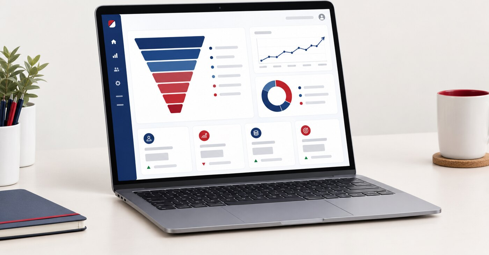
Media, physical production, development and third-party technology costs stay transparent and separate from our fees.
Start with Phase 1. Approve each next phase on evidence.
Build and prove the engine
Scale proven demand
Build authority and customer value
Create an expansion platform
The percentage falls as spend grows.
Actual monthly platform spend, excluding GST, refunds and ad credits. Each band starts above the lower figure and runs up to the upper one.
Paid-media management is the ₹48,000 monthly operating fee plus a reducing share of actual spend. Media is always paid directly by Nitstone.
Your team films. We plan, direct and finish everything else.
Video and creative, included
- Strategy, topics, scripts, hooks and CTAs
- Storyboards, shot lists and presentation guidance
- Remote direction while your team films at branches
- Editing, subtitles, motion graphics, language and platform versions
- Compliance guidance, routine AI-assisted editing
On-location shoots we arrange are scoped and priced separately. Specialised avatars, premium voices, custom models and third-party licences need separate approval.
Website, included
- Website audits and conversion recommendations
- Landing-page strategy and wireframes
- Content recommendations
- Development requirement documents
Coding and new builds come through one of two options.
Per requirement
One landing page, a form or WhatsApp integration, tracking, page speed, a calculator. We send scope, timeline and estimate; work starts on written approval.
Development retainer
Minimum three months (₹3,06,000 + GST). Prioritised capacity each month for landing and branch pages, integrations, tracking, SEO fixes and lead routing. Not unlimited; major rebuilds are assessed separately.
Ads buy enquiries. This system makes each rupee accountable.
Ads alone don't fix weak comparison visibility, unanswered trust questions, hard contact routes, slow follow-up, thin local proof or missing attribution. Here media, organic, local trust, conversion and branch performance run as one measured system.
- All professional fees exclude GST.
- Each phase is a 90-day minimum; later phases need written approval.
- Nitstone pays media directly to the ad platforms.
- Physical production, major development, complex CRM work, software, hosting, plugins, APIs, call tracking, influencers, talent, travel and PR placement are excluded unless approved.
- Nitstone owns its ad accounts, analytics properties and approved first-party data.
- Targets are operating objectives, not guarantees of lending, disbursal or revenue. Response time, branch capacity, credit decisions and follow-up all move conversion.
Nitstone doesn't have an awareness problem. It has a journey problem.
National lenders have more search, more reviews and more mature servicing. You can't beat their scale in six months. You can beat them in chosen Bengaluru catchments by being more local, more responsive, more transparent and more measurable.

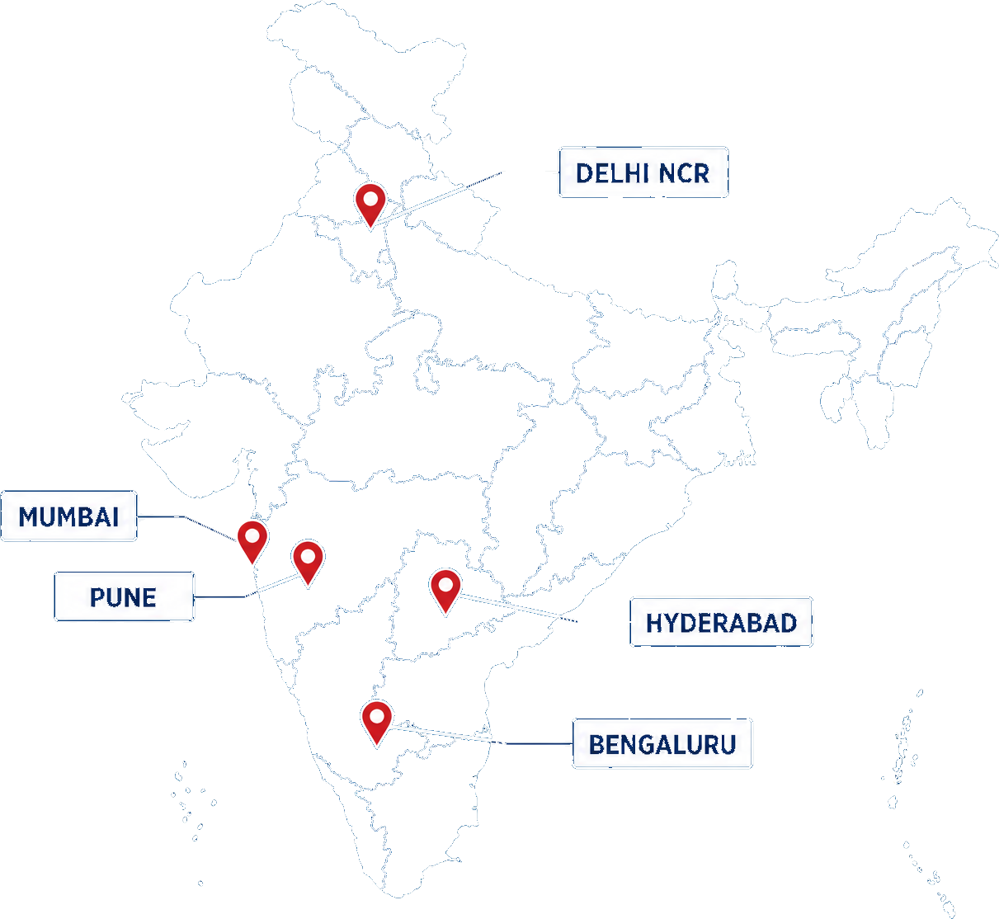